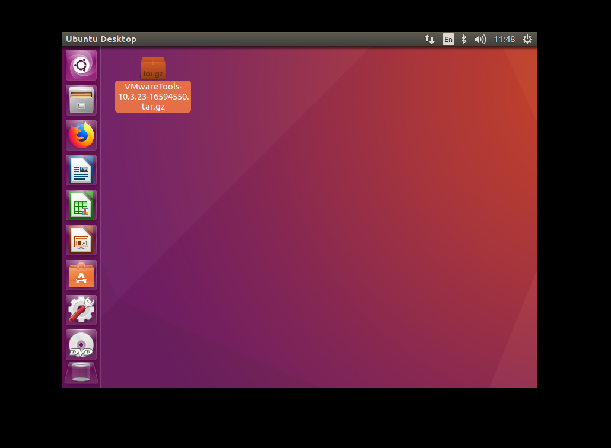
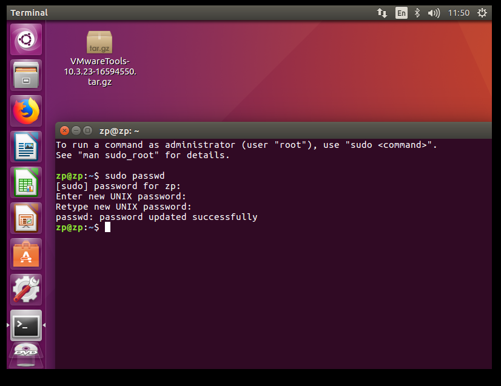
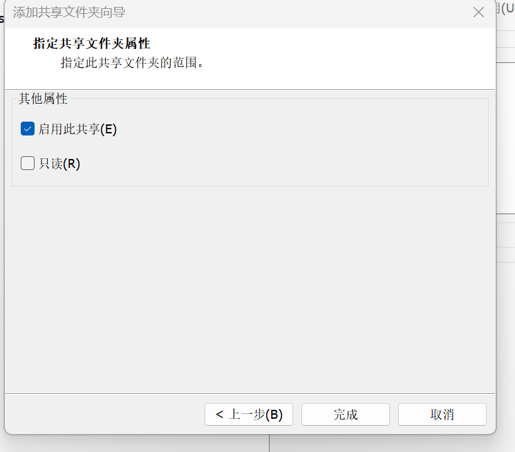
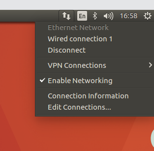

Last change: 2024-08-13 15:21:16
Linux 安装及配置#
Reference#
0 卸载VMwareWorkstation#
1 下载VMwareWorkstation#
有一个 github仓库
收集了各种版本的下载地址，我下载的是17.5.0的版本.
安装时修改安装路径，一直点击下一步即可.
2 下载Ubuntu#
可以在
清华大学的镜像站
里下载各个版本的Ubuntu，最新版本可以在
官网
进行下载，我下载的是24.04 LTS版本
3 创建虚拟机#


4 给虚拟机配置系统#
单击
CD/DVD
连接选择使用iso映像文件，选择前面下载的iso文件，点击确定
点击
开启此虚拟机
5 安装Ubuntu#
6 网络配置#
如果没有网络图标： 删除NetworkManager缓存文件，重启网络后问题就解决了.
sudo service NetworkManager stop sudo rm /var/lib/NetworkManager/NetworkManager.state sudo service NetworkManager start选择桥接模式的话，win主机可能无法上网，设置的参数步骤：
win主机上找到 管理网络适配器
找到WLAN，并查看其他属性，ubuntu网络设置界面Ipv4中选择manual，address和DNS就写这里面的信息，gateway和DNS的信息一致

子网掩码在win下通过cmd命令ipconfig查看
7 代理设置#
8 虚拟机终端代理设置#
参考： - https://blog.pica.icu:4443/2024/05/368/ - https://playlab.eu.org/archives/proxychains4
修改
.bashrc文件vim ~/.bashrc在里面任意位置添加上如下两行代码：
export http_proxy='http://localhost:33210' export https_proxy='http://localhost:33210'
其中的
33210是代理的端口号，需要依据自己的端口号对应修改。添加好之后保存，然后在终端执行：使得修改生效
source ~/.bashrc
8 VMware tools 安装#
关闭虚拟机
选择
CD/DVD，选择硬件选择使用物理驱动器，选择自动检测开启虚拟机，点击
否
安装VMware tools，选择上方选择卡，选择
虚拟机，选择安装VMware toolscopy gz文件到 unbutu desktop

 设置超级管理员密码，右键选择
open terminal，然后输入以下命令，并设置密码sudo passwd 运行以下命令获得超级管理员权限,可以直接输入
exit或者logout以返回到普通用户.su
运行以下命令解压gz文件，并安装vmare-tools
cd home/zp/Desktop/ tar -vxf VMwareTools-10/3/23-16594550.tar.gz cd vmware-tools-distrib/ ./vmware-install.pl
输入
yes，开始安装，然后一路回车
出现如下情况，表示安装成功，接着关闭虚拟机

重启后，检查：1、分辨率是否正常；2、虚拟机内外复制粘贴能不能使用；如果还不行的话，重新安装VMware Tools；这次使用指令来安装：
sudo apt-get autoremove open-vm-tools sudo apt-get install open-vm-tools sudo apt-get install open-vm-tools-desktop
安装过程一路默认回车，如果问你是否继续执行，就输入Y，继续就好了。安装完成后重启虚拟机。
9 共享文件夹配置#
在win主机下找到之前建立的虚拟机文件夹，我是
Ubuntu24.04，在文件夹内部新建一个share文件夹回到VMware Workstation，选择
编辑虚拟机设置，选择选项，选择共享文件夹，选择总是启用，选择添加，然后找到第3步设置的share文件夹
选择下一步，选择完成
 ubuntu内运行以下命令找到共享文件夹
## 进入根目录 cd / ## 进入挂载文件夹 cd mnt cd hgfs/
在本地win主机新建一个txt文件，并放到share文件夹内，切换回虚拟机的share文件夹则可以看到


10 主机和虚拟机复制粘贴互通#

{kind=link}
{kind=link}
{kind=link}
{kind=link}
{kind=link}
{kind=link}
{kind=link}
{kind=link}
{kind=link}
{kind=link}
{kind=link}
{kind=link}
{kind=link}
{kind=link}
{kind=link}
{kind=link}
{kind=link}
{kind=link}
{kind=link}
{kind=link}
{kind=link}
{kind=link}
{kind=link}
{kind=link}
{kind=link}
{kind=link}
{kind=link}
{kind=link}
{kind=link}
{kind=link}
{kind=link}
{kind=link}
11 VIM编辑器安装和配置#
检查网络是否开启
 运行以下代码安装VIM
sudo apt-get update sudo apt-get install vim
设置用vim编辑时显示行号，首先进入vimrc文件
cd / vim /etc/vim/vimrc
键盘点击
a，进入编辑模式，在文件末尾输入set number set ts=4
点击
esc，输入:w !sudo tee %，输入O，点击enter，输入:q!，点击enter查看vimrc文件，
cat /etc/vim/vimrc发现编辑成功

用vim打开一个文件，行号出现了
vim /mnt/hgfs/share/test.txt
{kind=link}
{kind=link}
12 SSH控制台登录与文件传输#
下面介绍一种不使用共享文件夹，但是也可以进行文件传输的方法
在ubuntu安装
openssh-serversudo apt-get update sudo apt-get install openssh-server
如果出现报错：
E: Could not get lock /var/lib/dpkg/lock-frontend - open (11: Resource temporarily unavailable) E: Unable to acquire the dpkg frontend lock (/var/lib/dpkg/lock-frontend), is another process using it?
运行以下命令：
ps aux | grep apt
杀掉对应的apt进程
kill -9 进程编号
然后再运行安装命令
配置
sshd_config文件cd / cd /etc/ssh/ vim sshd_config
输入小写
a，进入insert状态进行如下修改：
点击
esc，输入:w !sudo tee %，输入O，点击enter，输入:q!，点击enter启动ssh服务
service ssh restart
进入 MobaXterm官网，下载portable版本
点击
exe文件点击
session选择
SSH在ubuntu中输入
ifconfig，找到inet对应的ip地址，并复制到mobaxterm里，其他配置如下图，然后选择ok输入密码后，出现链接成功界面，可以通过左侧文件栏来进行文件传输
{kind=link}
{kind=link}
{kind=link}
{kind=link}
{kind=link}
{kind=link}